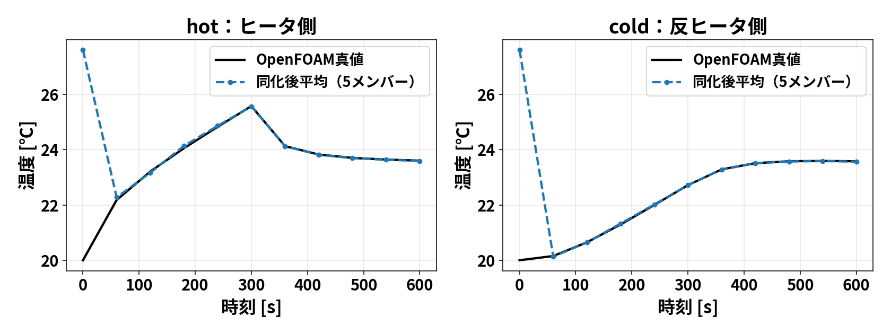
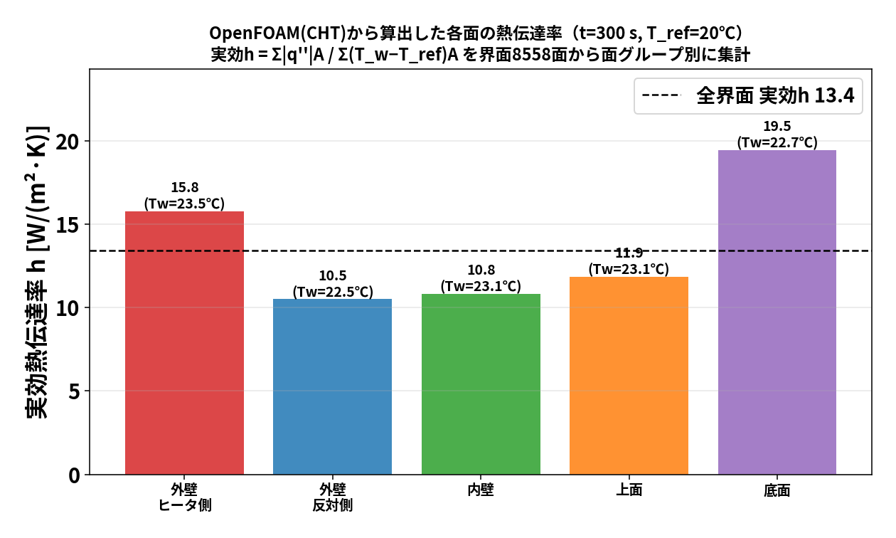
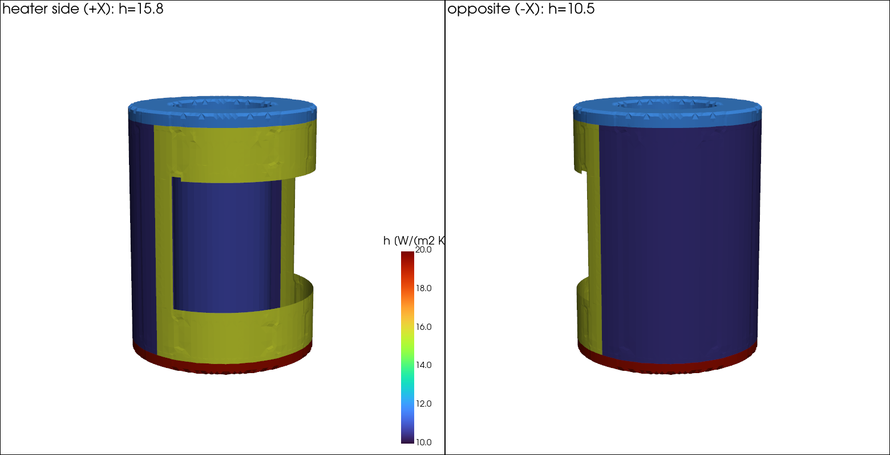

このブログシリーズは、106 でやった一連の研究（熱流体固体連成・データ同化・ROM）を、 手を動かしながら少しずつ理解していくためのものです。第1回は土台となる
の3本立てです。数式は最小限にして、まず「何をしているか」の絵をつかむことを優先します。
この記事の範囲：本記事は OpenFOAM（CHT）と FrontISTR の”計算そのもの” の話です。 データ同化（OI・EnKF）の中身は扱いません（それぞれ blog_002・blog_003 で別途）。
材料定数（鋼材）:
| 物性 | 値 |
|---|---|
| ヤング率 $E$ | 205 GPa（ $2.05^{11}$ Pa） |
| ポアソン比 $$ | 0.3 |
| 密度 $$ | 7850 kg/m³ |
| 線膨張係数 $$ | $1.2^{-5}$ /K |
| 基準温度 $T_$ | 293.15 K（20 ℃、ここで熱ひずみゼロ） |
熱の伝わり方は3つ（伝導・対流・輻射）ありますが、ここで効くのは 固体の中の伝導 と 固体まわりの空気の対流 です。ふつうの伝熱解析は「固体の表面に熱伝達率 $h$ を与えて」空気を省略します。 でも $h$ は本当は場所ごとに違い、事前には分かりません。
そこで 共役熱伝達（Conjugate Heat Transfer, CHT） では
固体と流体（空気）を”一体で”解く
ことをします。固体の中は熱伝導、空気の中は流れ＋伝導を解き、境界（固体表面）で温度と熱流束を連続に つなぐ。こうすると $h$ を仮定しなくても、空気の対流が自動的に固体を冷やしてくれます。
OpenFOAM でこれを解くソルバが chtMultiRegionFoam です（multi-region＝複数領域を同時に解く）。
CHT では計算領域を2つに分けます。
constant/
├─ solid/ ← 円筒（鋼材）。熱伝導だけ
└─ fluid/ ← まわりの空気。流れ＋熱境界条件のキモは、固体と空気が接する面です。ここに compressible::turbulentTemperatureCoupledBaffleMixed のような “連成境界条件” を置くと、両側の温度・熱流束を自動でつないでくれます。 （＝ここで $h$ を人間が与えない、というのがCHTの利点）
chtMultiRegionFoam を回すと、各時刻ディレクトリ（60/, 120/, …）に
solid/T：円筒の温度場（全セルの温度）fluid/T, fluid/U：空気の温度・流れが出ます。この solid/T（固体の温度場）が次の STEP で主役になります。 片側加熱なので、ヒータ側（+X）が熱く、反対側（−X）がぬるい、という左右非対称の温度分布になります。

実ソルバ（chtMultiRegionFoam）で計算した温度の時間変化。0〜300秒の加熱でヒータ側（hot）がぐんぐん上がり、 反対側（cold）はゆるやかに上がる。300秒でヒータOFFにすると冷却へ。左右で温度が違うのがポイント。
OpenFOAM は流体・伝熱は得意ですが、構造（変形・応力）は解きません。 一方 FrontISTR はオープンソースの有限要素法（FEM）構造解析ソルバで、熱膨張が得意です。 そこで 「温度は OpenFOAM、変形は FrontISTR」 と役割分担します（弱連成＝一方向に温度を渡すだけ）。
OpenFOAM(CHT) ──温度場 T(x)──▶ FrontISTR(熱弾性) ──▶ 変位 u(x)金属は温めると伸びます。伸び具合は 線膨張係数 $$ で決まり、温度が基準から $T = T - T_$ だけ上がると、各方向に
$$_=,T$$
だけ伸びようとします（ $$ はひずみ＝伸び率）。片側だけ熱いと、熱い側だけ伸びるので 円筒が反ります。FrontISTR は各要素のこの「伸びたい量」を集め、要素どうしがつながっている拘束の もとで、全体のつり合う変形（変位 $u$ ）を線形弾性で解きます。
solid/T を最寄り節点へ内挿）＋材料定数（ $E,,$ ）＋基準温度 $T_$ ＋境界拘束（底面固定）。底面を固定し上面を自由にしているので、上面がいちばん動きます。ヒータ側の上面（A）と 反対側の上面（O）で上向き変位 $U_z$ を比べると、片側加熱の「反り」が数値で見えます。 この 2 点の差 $U_z(A)-U_z(O)$ が、後のブログで「注目量（QoI）」として何度も出てきます。
FrontISTR で計算した熱変形。片側だけ熱いと上面がヒータ側へ「反り」、ヒータ側A と反対側O の 上向き変位 $U_z$ に差が出る。温度が上がるほど反りが大きくなり、冷却で戻る。（変形は見やすさのため誇張表示）
[各時刻] OpenFOAM: solid/T を計算
│
├─ FEM節点温度へ内挿
▼
FrontISTR: 熱ひずみ ε=αΔT → つり合い → 変位 u
▼
上面A/Oの Uz、2点差 = 反りの大きさこれで 「温度→変形」の物理が一通りつながりました。
CHT の利点は「 $h$ を仮定しない」ことでしたが、逆に結果から $h$ を”逆算”して分布を見ることができます。 「どの面がどれだけ冷えているか」を1つの数字（ $h$ ）で見える化するわけです。
ある壁面から空気へ逃げる熱流束（単位面積あたりの熱の流れ） $q^{}$ [W/m²] は、 壁の温度 $T_w$ と周囲（基準）温度 $T_$ の差に比例するとみなせて、その比例係数が熱伝達率 $h$ です。
$$q^{}=h,(T_w-T_)h= [].$$
CHT を解いた後、chtMultiRegionFoam の結果に対して
wallHeatFlux 関数（functionObject）または後処理ユーティリティで、 固体表面の各面（face）ごとに出せる。solid/T の表面パッチ値（各面の温度）。これらは全部 面（face）ごとに配列で得られるので、面ごとに割り算すれば
$$h_i=(i=)$$
で 「 $h$ の面分布」 が作れます。ParaView で $h$ をコンター表示すれば、 ヒータ側・反対側・上面・底面でどう $h$ が違うかが色で見えます。
「側面ヒータ側」「側面反対側」「上面」「底面」のように 面をグループに分けて、 各グループの $h$ を 面積で重みづけ平均すると、面ごとの代表値が出ます。
$$h_= =$$
（ $A_i$ は面 $i$ の面積）。右側の形は「そのグループから逃げる総熱量 ÷ 温度差の重みつき面積」で、 “面ごとの実効熱伝達率” になります。
方法だけでなく、本当に計算してみます。加熱終了の $t=300$ 秒で、chtMultiRegionFoam の結果に
postProcess -region solid -func wallHeatFlux -time 300をかけ、界面（solid_to_fluid パッチ、8558 面）の各面で $q^{}$ と $T_w$ を取り出し、 $T_=20$ ℃ として面グループごとに実効熱伝達率
$$h=$$
を集計しました（結果を図と表に）。

どの面がどこかを3Dでも見てみます（界面を $h$ で色分け）。ヒータ側(+X)と反対側(−X)から見た2枚です。

界面（solid_to_fluid パッチ）を熱伝達率で色分け。左＝ヒータ側(+X)から、右＝反対側(−X)から。 ヒータ側の外壁（黄, 15.8）＞ 反対側（濃紺, 10.5）、底面の縁（赤, 19.5）がいちばん高い、 上面（水色, 11.9）、空洞の内壁（青, 10.8）。「どの面がどれだけ冷えているか」が形と一緒に見えます。
| 面グループ | 平均壁温 $T_w$ | 実効 $h$ [W/(m²·K)] |
|---|---|---|
| 外壁・ヒータ側(+X) | 23.5 ℃ | 15.8 |
| 外壁・反対側(−X) | 22.5 ℃ | 10.5 |
| 内壁（空洞） | 23.1 ℃ | 10.8 |
| 上面 | 23.1 ℃ | 11.9 |
| 底面 | 22.7 ℃ | 19.5 |
| 全界面 | — | 13.4（OpenFOAM内蔵の heatTransferCoeff(T) 場とも整合） |
読み取れること:
ポイント：CHT は $h$ を 入力しない代わりに、結果から $h$ を 面ごとに診断できる。 「どの面がどれだけ冷えているか」を1枚の図＋表で定量化できるのが強みです。 （値は界面全体の面積重みつき実効値。局所には温度差ゼロ付近で $h$ が跳ねる面もあるため、 グループごとの実効値で見るのが安全です。）
chtMultiRegionFoam） は固体＋空気を一体で解き、 $h$ を仮定せず温度場を出す。次回（blog_002）は、この「温度→変形」を土台に、少ないセンサから全体を推定するデータ同化（OI）へ進みます。 まず 熱感度解析で”どこを測ると効くか”を見抜き、感度の高い点で OI を回します。行列の計算は 節点数をうんと減らした具体例で、手で追えるようにやります。
../../102_1_frontistr_hollow_cylinder_thermal_expansion/docs/00_openfoam_frontistr_coupling_workflow.md00_data_assimilation_algorithm.md../../102_1_frontistr_hollow_cylinder_thermal_expansion/config/material_properties_steel.yaml